3 特殊函数
| (require math/special-functions) | package: math-lib |
术语 “special function” 没有正式定义。 然而,为了 math 库的目的, 一个 special function 是一个非 elementary .
许多函数对某些精确参数返回精确值。
当应用于其域外的精确参数时,它们会引发 exn:fail:contract 而不是返回 +nan.0 。
目前, math/special-functions 并没有输出任何接受或返回复数的函数。 在数学上,有些函数可以在给定实数的情况下返回复数,例如 hurwitz-zeta 给定第二个负参数时。 在这些情况下,它们会引发 exn:fail:contract (对于一个精确的参数) 或返回 +nan.0 (对于一个不精确的参数)。
大多数实数函数有一个以上的类型,但它们被记录为只有一个。 文档中的类型是最通用的类型,它被用来生成一个契约,用于非类型化代码中的使用。 使用 :print-type 来查看一个函数的所有类型。
因为 lambert : Zero -> Zero, Typed Racket 在类型检查中证明了它的一个确切情况是 (lambert 0) = 0 。
因为定理 lambert : Flonum -> Flonum 被表述为一个类型, 并通过类型检查得到证明,Typed Racket 的优化器可以将围绕其使用的表达式转化为裸机浮点运算。 例如, (+ 2.0 (lambert 3.0)) 被转换为 (unsafe-fl+ 2.0 (lambert 3.0)) 。
最一般的类型 Real -> (U Zero Flonum) 被用来生成 lambert 的契约,当它被用在无类型的代码中。 除了这次讨论,这是 lambert 的唯一记录的类型。
3.1 实数函数
procedure
(gamma x) → (U Positive-Integer Flonum)
x : Real
> (plot (list (function (λ (x) (gamma (+ 1 x))) 0 4.5 #:label "gamma(x+1)") (function (λ (x) (factorial (truncate x))) #:color 2 #:label "factorial(floor(x))"))) 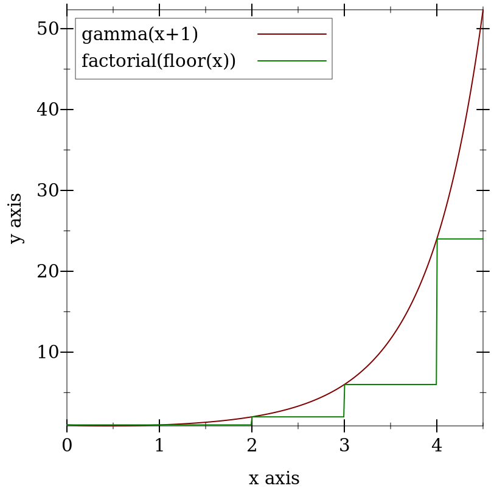
> (plot (function gamma -2.5 5.5) #:y-min -50 #:y-max 50) 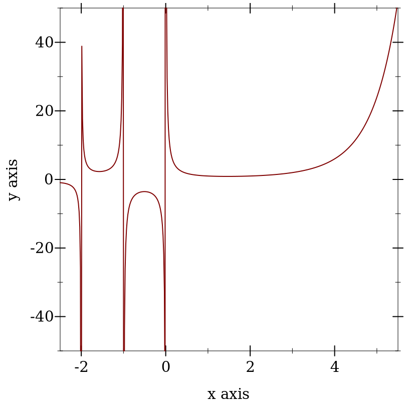
> (gamma 5) 24
> (gamma 5.0) 24.0
> (factorial 4) 24
> (gamma -1) gamma: contract violation
expected: Real, not Zero or Negative-Integer
given: -1
> (gamma -1.0) +nan.0
> (gamma 0.0) +inf.0
> (gamma -0.0) -inf.0
> (gamma 172.0) +inf.0
> (bf (gamma 172)) (bf "1.241018070217667823424840524103103992618e309")
在所有测试过的地方,误差都不超过 10 ulps ,而且通常不超过 4 ulps。
> (plot (list (function log-gamma -5.5 10.5 #:label "log-gamma(x)") (function (λ (x) (log (abs (gamma x)))) #:color 2 #:style 'long-dash #:width 2 #:label "log(abs(gamma(x)))"))) 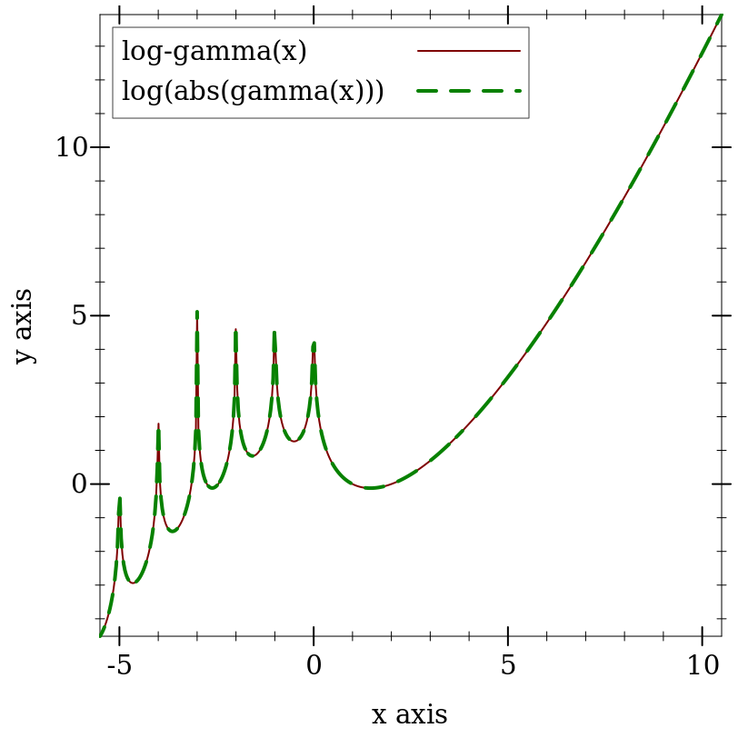
> (log-gamma 5) 3.1780538303479458
> (log (abs (gamma 5))) 3.1780538303479458
> (log-gamma -1) log-gamma: contract violation
expected: Real, not Zero or Negative-Integer
given: -1
> (log-gamma -1.0) +inf.0
> (log-gamma 0.0) +inf.0
> (log (abs (gamma 172.0))) +inf.0
> (log-gamma 172.0) 711.71472580229
在所有被测试的地方,误差都不超过 11 ulps ,通常不超过 2 ulps 。 误差在负根附近达到最大。
> (plot (function psi0 -2.5 4.5) #:y-min -5 #:y-max 5) 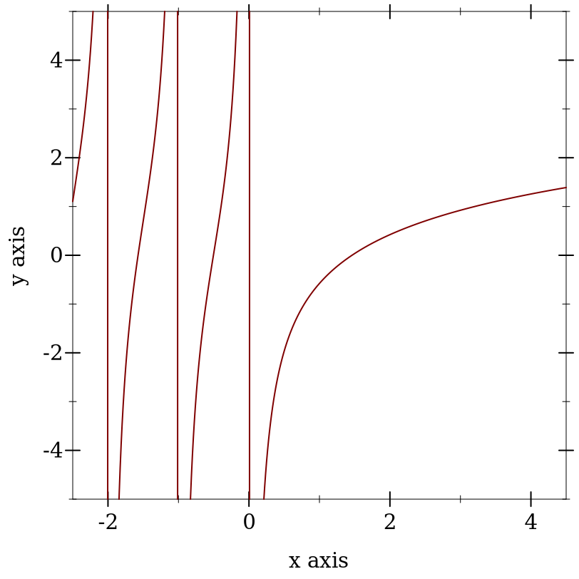
> (psi0 0) psi0: contract violation
expected: Real, not Zero or Negative-Integer
given: 0
> (psi0 1) -0.5772156649015329
> (- gamma.0) -0.5772156649015329
除了在负根附近,最大的观察误差是 2 ulps, 但通常不超过 1。
在负根附近,即每对负整数之间单独出现的地方, psi0 表现出使用反射公式的 catastrophic cancellation , 这意味着相对误差实际上是没有限制的。 然而,观察到的最大 absolute-error 是 (* 5 epsilon.0) 。 这是我们目前能做的最好的了,因为目前还没有合理的快速算法来计算负根附近的 psi0 ,而且相对误差很低。
如果你需要负根附近的低相对误差,请使用 bfpsi0 。
> (plot (for/list ([m (in-range 4)]) (function (λ (x) (psi m x)) -2.5 2.5 #:color m #:style m #:label (format "psi~a(x)" m))) #:y-min -300 #:y-max 300 #:legend-anchor 'top-right) 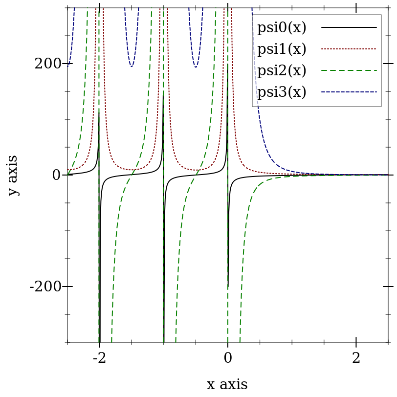
> (psi -1 2.3) psi: contract violation
expected: Natural
given: -1
argument position: 1st
other arguments...:
2.3
> (psi 0 -1.1) 10.154163959143848
> (psi0 -1.1) 10.154163959143848
从对 m > 0 的抽查来看,误差似乎与 psi0 一样:除了在负根附近,误差非常低。 在负根附近,相对误差显然是无界的,但绝对误差却很低。
> (plot (list (function erf -2 2 #:label "erf(x)") (function erfc #:color 2 #:label "erfc(x)"))) 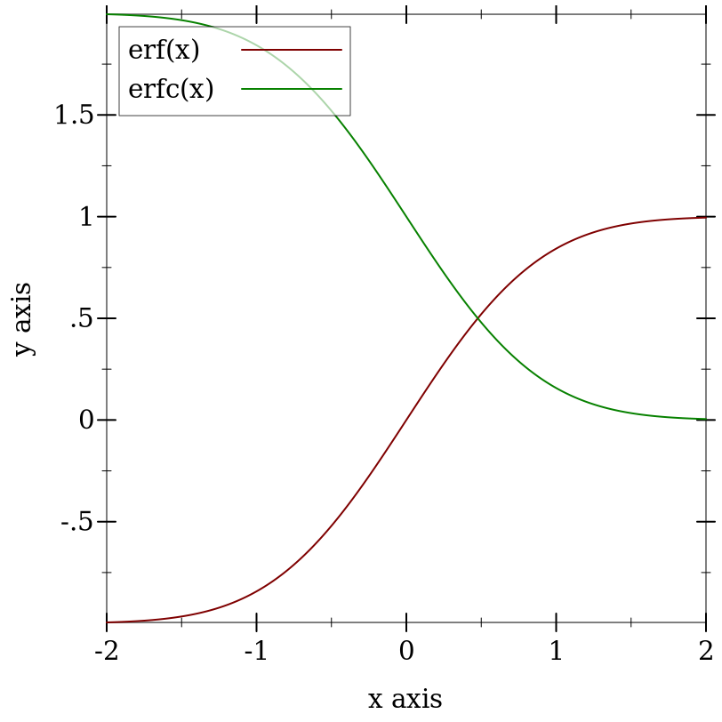
> (erf 0) 0
> (erf 1) 0.8427007929497148
> (- 1 (erfc 1)) 0.8427007929497148
> (erf -1) -0.8427007929497149
> (- (erfc 1) 1) -0.8427007929497148
在数学上, erfc(x) = 1 - erf(x), 但是有单独的实现可以帮助保持准确性。 要计算一个包含 erf 的表达式,对接近 0.0 的 x 使用 erf 。 对于远离 0.0 的正 x ,操作 (- 1.0 (erfc x)) 及其周围的表达式以避免减法:
> (define x 5.2) > (bf-precision 128) > (define log-erf-x (bigfloat->rational (bflog (bferf (bf x))))) > (flulp-error (log (erf x)) log-erf-x) 873944876280.6095
> (flulp-error (log (- 1.0 (erfc x))) log-erf-x) 873944876280.6095
> (flulp-error (fllog1p (- (erfc x))) log-erf-x) 1.609486456125461
对于 erf, 在所有被测试的地方,误差都不超过 2 ulps ,而且几乎总是不超过 1。 对于 erfc, 观察到的误差不超过 4 ulps,而且通常不超过 2。
这个函数有两个实数分支。 lambert 变体计算上部分支,定义为 x >= (- (exp -1)) 。 lambert- 变体计算下部分支,定义为 negative x >= (- (exp -1)) 。 唯一精确的情况是 (lambert 0) = 0 。
> (plot (list (function lambert (- (exp -1)) 1) (function lambert- (- (exp -1)) -min.0 #:color 2)) #:y-min -4) 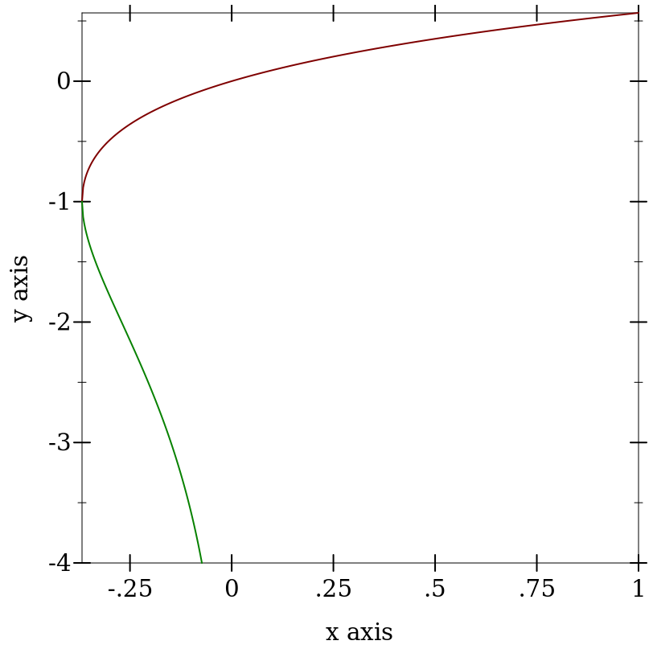
> (lambert 0) 0
> (lambert (- (exp -1))) -1.0
> (lambert -1/2) lambert: contract violation
expected: Real >= (- (exp -1))
given: -1/2
> (lambert- 0) lambert-: contract violation
expected: Negative-Real >= (- (exp -1))
given: 0
> (define y0 (lambert -0.1)) > (define y1 (lambert- -0.1)) > y0 -0.11183255915896297
> y1 -3.577152063957297
> (* y0 (exp y0)) -0.1
> (* y1 (exp y1)) -0.10000000000000002
Lambert W 函数经常出现在含有 n log(n) 的方程的解中, 例如那些描述除法和征服算法的运行时间的方程。
> (define (time->sort-size t) (exact-floor (exp (lambert (/ t c))))) > (time->sort-size 100) 2548516
> (define lst2 (build-list 2548516 values)) > (time (sort lst2 <)) cpu time: 80 real time: 93 gc time: 0
对于两个分支,在所有测试的地方,误差都不超过 2 ulps 。
> (plot (function zeta -2 10) #:y-min -4 #:y-max 4) 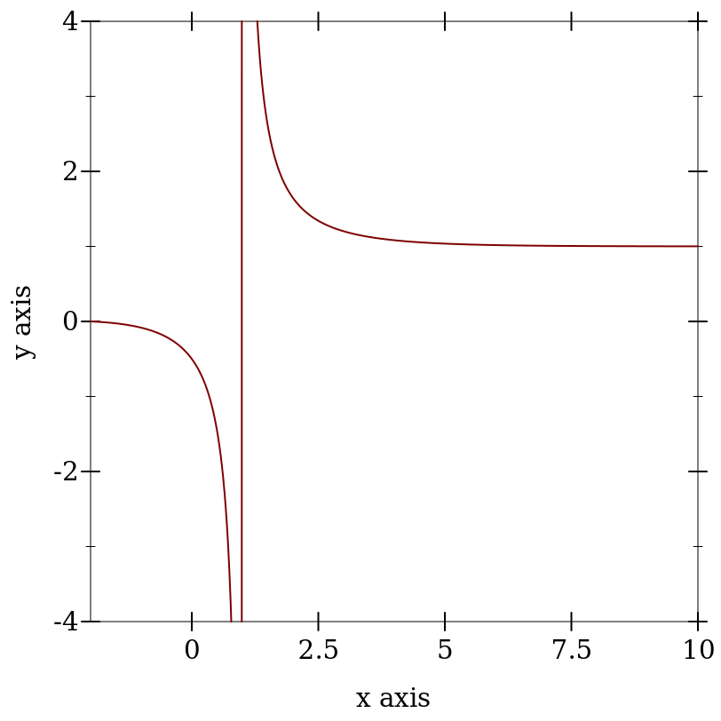
> (plot (function zeta -14 -2)) 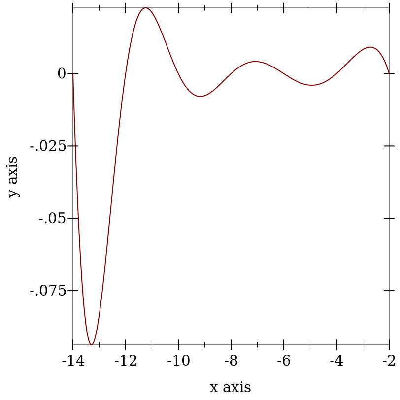
> (zeta 0) -1/2
> (zeta 1) zeta: contract violation
expected: Real, not One
given: 1
> (zeta 1.0) -inf.0
> (zeta -1) -1/12
> (define num 1000000)
> (define num-coprime (for/sum ([_ (in-range num)]) (if (coprime? (random-bits 16) (random-bits 16)) 1 0))) > (fl (/ num-coprime num)) 0.607901
> (/ 1 (zeta 2)) 0.6079271018540264
当 s 是一个奇数、负数的精确整数时, (zeta s) 计算 (bernoulli (- 1 s)), 这可能是相当慢。
最大观察误差为 6 ulps, 但通常为 3 或更少。
> (plot (function eta -10 6)) 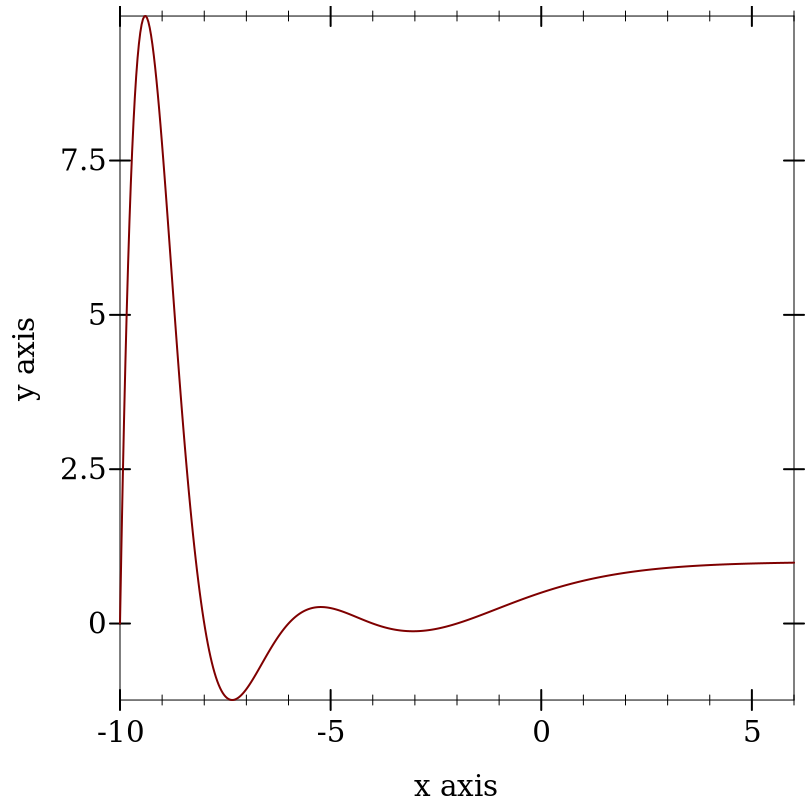
> (eta 0) 1/2
> (eta -1) 1/4
> (eta 1) 0.6931471805599453
> (log 2) 0.6931471805599453
当 s 是一个奇数、负数的精确整数时, (eta s) 计算 (bernoulli (- 1 s)), 这可能是相当慢。
最大的观察误差为 11 ulps,但通常为 4 或更少。
procedure
(hurwitz-zeta s q) → Real
s : Real q : Real
> (plot (list (function zeta 1.5 5) (function (λ (s) (hurwitz-zeta s 1)) #:color 2 #:style 'long-dash #:width 2))) 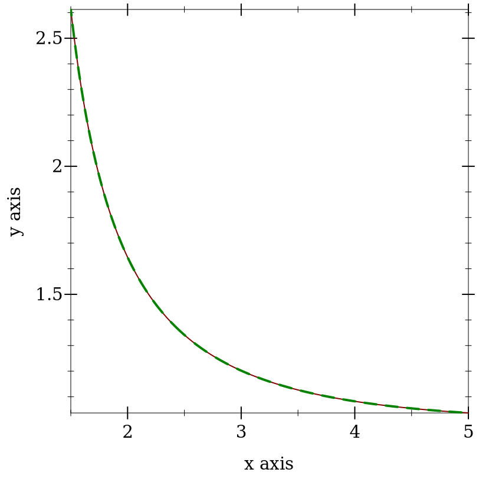
> (hurwitz-zeta 1 1) hurwitz-zeta: contract violation
expected: Real > 1
given: 1
argument position: 1st
other arguments...:
1
> (hurwitz-zeta 1.0 1.0) +inf.0
> (hurwitz-zeta 2 1/4) 17.197329154507113
> (+ (sqr pi) (* 8 catalan.0)) 17.19732915450711
虽然 hurwitz-zeta 目前对 s < 1 提出了一个异常,但它在未来可能会返回真实值。
最大观察误差为 6 ulps, 但通常为 2 或更少。
> (plot3d (contour-intervals3d beta 0.25 2 0.25 2) #:angle 250) 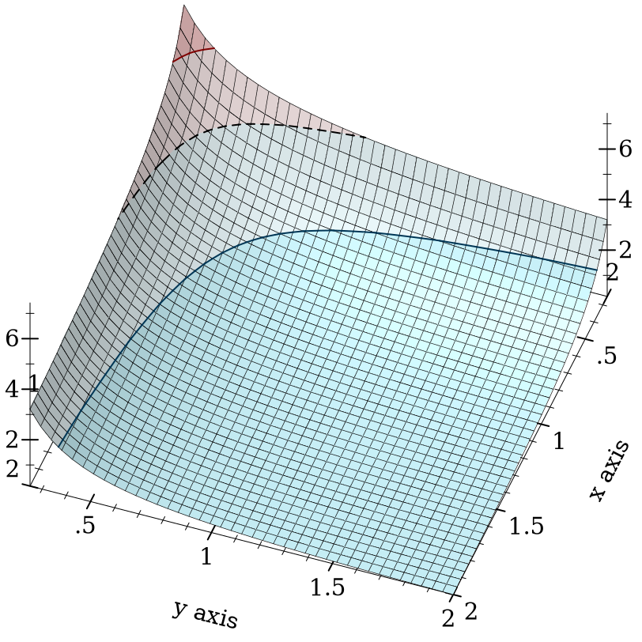
> (beta 0 0) beta: contract violation
expected: positive Real
given: 0
argument position: 1st
other arguments...:
0
> (beta 1 5) 1/5
> (beta 1.0 5.0) 0.2
如果你在做统计工作,你可能应该用 gamma-dist 来代替, 它是用 gamma-inc 来定义的,而且更灵活(例如,它允许负 x) 。
> (list (plot3d (contour-intervals3d gamma-inc 0.1 4.5 0 10) #:x-label "k" #:y-label "x" #:width 210 #:height 210) (plot3d (contour-intervals3d (λ (k x) (gamma-inc k x #t)) 0.1 4.5 0 10) #:x-label "k" #:y-label "x" #:width 210 #:height 210)) '(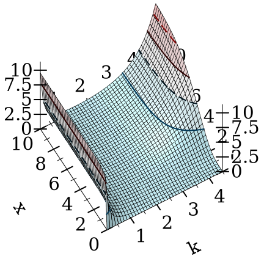 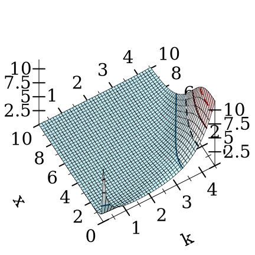)
> (plot3d (contour-intervals3d (λ (k x) (gamma-inc k x #f #t)) 0.1 20 0 20) #:x-label "k" #:y-label "x") 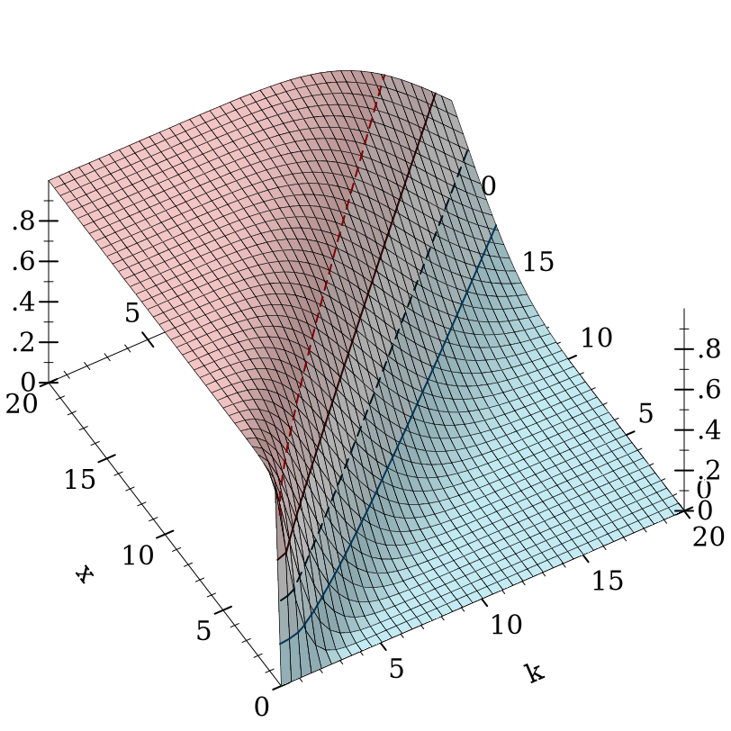
> (gamma 4.0) 6.0
> (+ (gamma-inc 4.0 0.5 #f) (gamma-inc 4.0 0.5 #t)) 6.0
> (gamma-inc 4.0 +inf.0) 6.0
> (/ (gamma-inc 200.0 50.0 #f) (gamma 200.0)) +nan.0
> (gamma-inc 200.0 50.0 #f #t) 2.0247590148473565e-57
> (gamma-inc 0 5.0) gamma-inc: contract violation
expected: Positive-Real
given: 0
argument position: 1st
other arguments...:
5.0
> (gamma-inc 0.0 5.0) +inf.0
procedure
(log-gamma-inc k x [upper? regularized?]) → Flonum
k : Real x : Real upper? : Any = #f regularized? : Any = #f
如果你在做统计工作,你可能应该用 beta-dist 来代替, 它是用 beta-inc 来定义的,而且更灵活(例如,它允许负 x)。
与 gamma-inc 类似的特性应该成立。
> (plot3d (isosurfaces3d (λ (a b x) (beta-inc a b x #f #t)) 0.1 2.5 0.1 2.5 0 1 #:label "beta(a,b,x)") #:x-label "a" #:y-label "b" #:z-label "x" #:angle 20 #:altitude 20 #:legend-anchor 'top) 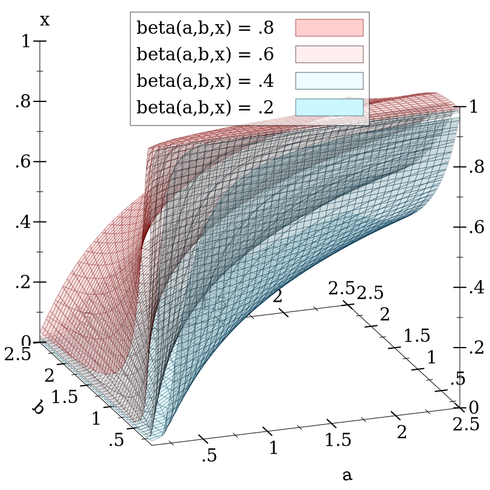
procedure
(log-beta-inc a b x [upper? regularized?]) → Flonum
a : Real b : Real x : Real upper? : Any = #f regularized? : Any = #f
虽然这个函数的大部分区域的误差小于 5e-15, 但当 a 和 b 的量级非常不同时(例如 1e-16 和 1e+16), 它表现出 catastrophic cancellation 。我们正在努力解决这个问题。
procedure
x : Real
procedure
x : Real
procedure
(Fresnel-RS x) → Real
x : Real
procedure
(Fresnel-RC x) → Real
x : Real
(Fresnel-S x) calculates ∫sin(πt²/2) |0->x
(Fresnel-C x) calculates ∫cos(πt²/2) |0->x
(Fresnel-RS x) calculates ∫sin(t²) |0->x
(Fresnel-RC x) calculates ∫cos(t²) |0->x
> (plot (list (function Fresnel-RS 0 5 #:label "Fresnel-RS(x)") (function Fresnel-RC 0 5 #:color 2 #:label "Fresnel-RC(x)"))) 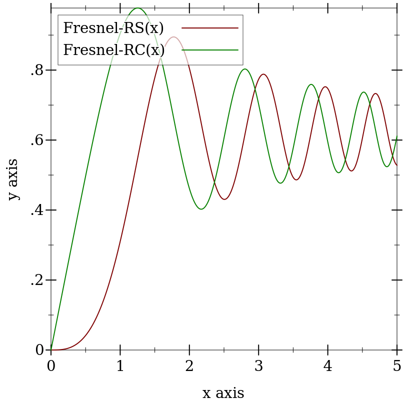
> (plot (parametric (λ (t) (list (Fresnel-C t) (Fresnel-S t))) -5 5 #:label "Euler spiral")) 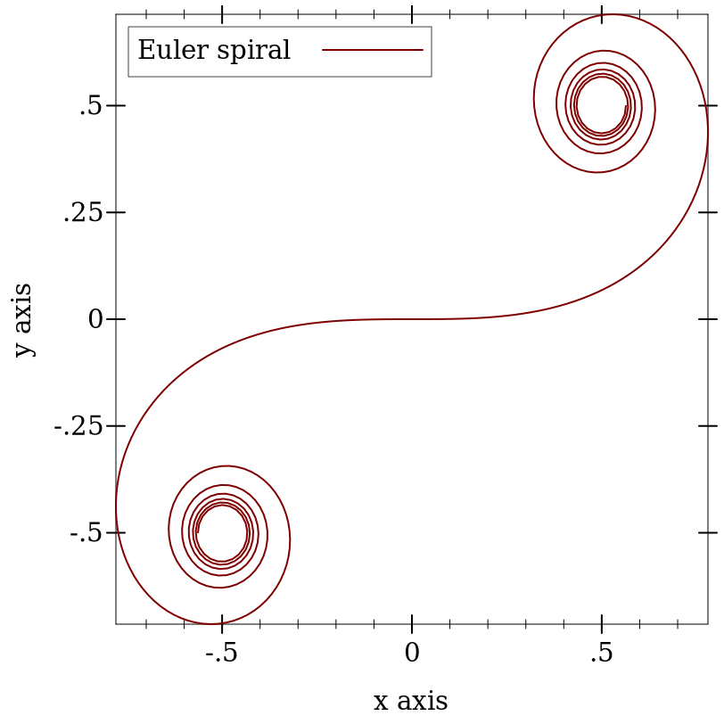
> (Fresnel-RS 1) 0.31026830172338116
> (* (sqrt (/ pi 2)) (Fresnel-S (* (sqrt (/ 2 pi)) 1))) 0.31026830172338116
在 0<=x<=150 的区域内进行的抽查表明,在已经测试过的所有地方,误差都不超过 1e-14,通常低于 2e-15。
3.2 Flonum 函数
procedure
(fllog-gamma x) → Flonum
x : Flonum
procedure
(fllambert- x) → Flonum
x : Flonum
procedure
(flhurwitz-zeta s q) → Flonum
s : Flonum q : Flonum
procedure
(fllog-beta x y) → Flonum
x : Flonum y : Flonum
procedure
(flgamma-inc k x upper? regularized?) → Flonum
k : Flonum x : Flonum upper? : Any regularized? : Any
procedure
(fllog-gamma-inc k x upper? regularized?) → Flonum
k : Flonum x : Flonum upper? : Any regularized? : Any
procedure
(flbeta-inc a b x upper? regularized?) → Flonum
a : Flonum b : Flonum x : Flonum upper? : Any regularized? : Any
procedure
(fllog-beta-inc a b x upper? regularized?) → Flonum
a : Flonum b : Flonum x : Flonum upper? : Any regularized? : Any
procedure
(flFresnel-S x) → Flonum
x : Flonum
procedure
(flFresnel-C x) → Flonum
x : Flonum